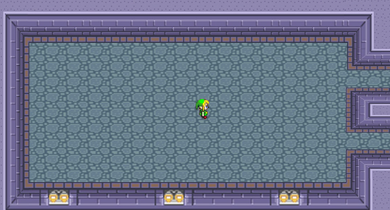

Les derniers articles :
Vault 7 : Le leak de trop pour la C.I.A. ?

Le site de Julian Assange vient de publier des milliers de documents qui exposent les innombrables outils de piratage de la célèbre agence d’espionnage américaine. Un leak édifiant, plus riche encore que les révélations d’Edward Snowden. Lire la suite
Qwant: Le moteur de recherche français !
Si vous n'avez pas encore entendu parler de Qwant vous avez manqué une grosse actualité puisque celui ci est présent partout en ce moment ! Ce moteur de recherche, né de l'esprit de 3 français en juin 2011, est basé sur le principe de ne garder aucune trace de ses utilisateurs...Lire la suite
Programme de la semaine :
Tor : l'anonymat total sur Internet

Si vous souhaitez renforcer la sécurité quand vous surfez sur internet tout en vous assurant un anonymat total, le système Tor vous offre un excellent moyen gratuit de vous protéger. Le système Tor se présente sous la forme d’un package qui contient une version modifiée de Firefox, complété par un module de connexion au réseau Tor. Il suffit de décompresser et d’installer le tout. Une fois qu’une connexion sécurisée sera ouverte avec le réseau Tor, le système ouvre une fenêtre du navigateur Firefox, qui vous permettra de commencer votre navigation internet.
Difficulté : 3/5
Jeu à l'affiche :
WIKI QUIZ
Testez vos conaissances sur le libre et l'informatique dans un quizz ludique, interactif et approfondi qui vous indiquera où vous renseigner en cas d'erreur.